Jurnal Eropa · Hari 15 dari 16
Hari terakhir
bersama Justin
Rombongan yang sejak hari pertama berjalan bersama hari ini mulai berpisah. Penerbangan Justin sore nanti, jadi paginya dipakai untuk satu hal yang paling masuk akal: menitipkan koper, lalu jalan kaki pelan-pelan tanpa membawa apa-apa. Dan di halte bus pagi itu, ada satu penemuan kecil yang bikin semua orang tertawa — ternyata cara menyetop bus di Skotlandia sama persis dengan cara menyetop angkot di Bekasi.
Menyetop bus, ala Bekasi
Penemuan pagi yang bikin semua orang tertawa
Pagi terakhir bersama Justin dibuka dengan satu hal sepele yang ternyata paling berkesan: berdiri di halte, menunggu bus, dan menyadari bahwa busnya tidak akan berhenti kalau kamu cuma berdiri diam.

Itu bukan gaya-gayaan. Di sini, kalau kamu tidak memberi isyarat, busnya lewat begitu saja.
Alasannya sederhana kalau dipikir: satu halte bisa dilewati banyak trayek berbeda. Sopir tidak bisa menebak kamu menunggu bus yang mana. Jadi tugas kamu yang memberi tahu — dengan mengulurkan tangan ke arah jalan begitu busnya kelihatan dari kejauhan.

Buat pembaca Indonesia, ini termasuk kejutan yang menyenangkan. Kita cenderung membayangkan transportasi umum di Eropa serba otomatis dan serba terjadwal — dan sebagian memang begitu. Tapi di urusan yang satu ini, logikanya sama persis dengan angkot di rumah: kalau mau naik, kasih tanda.
Satu tambahan yang perlu diingat, dan ini kebalikannya: kalau mau turun, tekan tombol berhenti sebelum haltenya. Bus tidak otomatis berhenti di tiap halte kalau tidak ada yang naik dan tidak ada yang menekan tombol.
Menitipkan koper, dan aturannya lebih ketat dari dugaan
Karena letaknya di stasiun, bukan di toko biasa
Penerbangan Justin baru sore. Dan membawa koper besar keliling kota selama setengah hari adalah ide yang sudah dibuktikan buruk di London beberapa hari lalu. Jadi keputusannya gampang: koper dititipkan dulu.

Yang tidak diduga adalah prosedurnya. Ini bukan tempat yang tinggal datang, taruh, bayar.

Kelihatannya berlebihan, tapi masuk akal begitu diingat letaknya di dalam kawasan stasiun. Barang yang dititipkan di simpul transportasi diperlakukan lebih hati-hati daripada barang yang dititipkan di toko biasa: harus jelas siapa pemiliknya, siapa yang menaruh, dan siapa yang berhak mengambil.
Jadi catatan buat siapa pun yang mau meniru cara ini: pastikan yang memesan adalah orang yang akan benar-benar datang menaruh dan mengambil kopernya. Kalau tidak, kamu akan berdiri di konter dengan empat koper dan satu nama yang tidak cocok.
Bus bandara yang lewat — dan yang akhirnya tidak dipakai
Angkanya tertulis besar-besar di badan busnya, dan tetap kalah

Dibaca dari badan busnya sendiri, apa adanya:
Enam pound untuk sampai ke bandara dalam setengah jam. Bandingkan dengan taksi, yang di kota mana pun ke bandara jarang di bawah angka dua digit — dan selisihnya jadi jelas kenapa bus ini penuh terus.
Tapi ini perlu diluruskan, karena sorenya ternyata lain: Justin tidak naik bus ini. Uber sempat dipertimbangkan lalu dicoret cepat — untuk satu orang ke bandara harganya tidak masuk akal — dan pilihannya akhirnya jatuh ke trem. Bus ini cuma kebetulan lewat di depan kami jam 11.47, dengan seluruh keterangannya tercetak di badannya sendiri.
Monumen paling besar di kota ini, untuk seorang penulis novel
Dan namanya sudah dua kali muncul di jurnal ini tanpa direncanakan
Jalan kaki tanpa koper, dan yang pertama menagih perhatian berdiri di tepi jalan utama: sebuah menara batu hitam runcing yang tingginya bikin orang otomatis mendongak.

Ini monumen untuk Sir Walter Scott — dan ini pertemuan ketiga kami dengan namanya di perjalanan ini, dua di antaranya tanpa disengaja:


Jam 11.51 dan 12.23. Perhatikan langitnya di dua foto ini: dalam setengah jam berubah dari kelabu jadi biru. Di kota ini itu bukan kebetulan, itu kebiasaan.

Dan yang layak dipikirkan sebentar: kota ini punya kastil, punya istana, punya katedral, dan punya sejarah perang yang panjang. Tapi monumen terbesar yang berdiri di jalan utamanya dibangun untuk orang yang pekerjaannya menulis cerita.
Dan di kakinya, satu nama lagi
Yang di zamannya termasuk orang Skotlandia paling terkenal di dunia

David Livingstone — dokter sekaligus misionaris asal Skotlandia yang pada abad ke-19 melakukan perjalanan panjang menyusuri pedalaman Afrika, dan yang laporannya membuat namanya sangat terkenal di seluruh Kerajaan Inggris pada zamannya.
Perlu ditambahkan satu hal, dan ini bukan untuk merusak fotonya: cara orang menilai tokoh-tokoh seperti ini sekarang jauh lebih berhati-hati daripada waktu patungnya dibuat. Perjalanan-perjalanan itu berlangsung di masa ketika Eropa sedang membagi-bagi Afrika, dan pengetahuan yang dibawa pulang para penjelajah ikut dipakai untuk itu — terlepas dari niat orangnya sendiri.
Kota ini sendiri sudah mulai menuliskannya terus terang. Papan sambutan di pelataran universitasnya, yang kemarin dibaca, bahkan mencantumkan tautan khusus soal keterkaitan sejarah kampus itu dengan perbudakan dan rasisme, serta apa yang mereka lakukan sekarang. Ditulis di papan sambutan, bukan disembunyikan di arsip.
Taman di dasar lembah
Yang di Hari 13 cuma dilihat dari peron, hari ini dijalani dari dalam

Ini lembah yang sama yang dijelaskan waktu baru sampai dua hari lalu: dulunya danau buatan yang sengaja dijadikan pertahanan alami untuk kota di atas bukit, lalu dikeringkan, lalu sebagiannya jadi tempat rel kereta dan sebagiannya lagi jadi taman ini.
Waktu itu lembahnya dilihat dari peron stasiun, sambil mendongak. Hari ini dilihat dari dalam tamannya, sambil berjalan. Tempat yang sama, dua sudut pandang, jeda dua hari.

Jadi bahkan di hari pertama bulan September, spanduk-spanduk festival itu masih terpasang. Kota ini butuh waktu untuk melepas kostumnya.

Satu hal yang layak dicatat siapa pun yang menyusun anggaran perjalanan: galeri dan museum nasional di Inggris dan Skotlandia umumnya gratis dimasuki. Koleksi tetapnya bisa dilihat tanpa membeli tiket; yang berbayar biasanya cuma pameran khusus. Di kota yang harga penginapannya bikin kaget, itu penyeimbang yang nyata.


Jam 12.26 dan 12.29. Dan inilah gunanya menitipkan koper tadi pagi — tangan kosong, jalan pelan, tidak ada yang perlu dijaga.

Camar yang tahu persis siapa yang sedang makan
Dan orang-orang di bangku taman itu jelas sudah hafal

Ini camar herring (herring gull) — badan besar, kepala putih, paruh kuning dengan bercak merah, kaki merah muda. Edinburgh memang kota tepi laut: muara Firth of Forth ada beberapa kilometer saja di utara. Tapi burung-burung ini sudah lama tidak lagi hidup dari laut.
Mereka bersarang di atap-atap gedung batu di tengah kota, dan mereka belajar membaca manusia. Orang yang duduk di bangku sambil memegang bungkusan kertas adalah tanda yang sangat jelas. Dan yang bikin foto ini lucu bukan burungnya, tapi orang-orangnya: tidak ada yang kaget, tidak ada yang mengusir. Semuanya sudah tahu bagaimana akhirnya.
Satu hal yang mungkin mengejutkan: meskipun kelihatan ada di mana-mana, camar herring justru masuk daftar merah konservasi di Britania. Populasi yang berkembang biak di pesisir turun tajam dalam beberapa dekade terakhir. Yang bertambah adalah yang pindah ke kota — ke atap, ke tempat sampah, ke bangku taman. Jadi yang kita lihat di sini sebetulnya bukan tanda mereka berlimpah, melainkan tanda mereka pindah rumah.
Dan tetap saja: jangan diberi makan. Bukan karena galak, tapi karena sekali satu burung tahu tanganmu mengeluarkan sesuatu, kamu tidak akan berhadapan dengan satu burung lagi.
Toko buku yang menjual kopi, dan jendelanya menghadap kastil
Naik satu lantai, dan yang berubah bukan cuma pemandangannya

Sore itu berhenti di sebuah toko buku yang punya kafe di lantai atasnya — model yang sudah lama jadi standar di Inggris. Bukunya di bawah, kopinya di atas, dan tidak ada yang mengusirmu kalau kamu duduk lama.


Jam 14.00 dan 14.04. Kiri: kafenya, dengan jendela lengkung sepanjang dinding. Kanan: bagian buku anak-anak, lengkap dengan bendera segitiga — bagian yang paling ramai warnanya di seluruh toko.
Perhatikan orang-orang di foto kiri: hampir semuanya membuka laptop. Ini bukan kafe wisata. Ini ruang kerja umum yang kebetulan menjual kopi, di kota yang sedang penuh sesak karena festival.

Ini pemandangan yang di tempat lain harus dibayar. Restoran-restoran dengan sudut seperti ini memasang harga khusus untuk mejanya. Di sini tiket masuknya cuma secangkir kopi, dan kalaupun tidak beli apa-apa, masuk ke tokonya tetap gratis.


Satu jam lima menit di dalam, untuk dua gelas minuman. Di kota yang sedang di puncak musim festival, itu barangkali kursi termurah yang menghadap ke kastil.
Dan lagi, kerucut itu
Yang kemarin ketemu sekali di kepala patung, hari ini muncul dua kali tanpa dicari sama sekali

Sebentar soal patung itu, karena polanya sudah terlalu sering muncul untuk dianggap kebetulan. Di jurnal ini saja, dalam tiga hari, sudah lewat: seorang filsuf, seorang ekonom, seorang penjelajah, seorang pendeta, seorang prajurit berkuda, dan seorang penulis novel. Di kawasan Kota Baru Edinburgh, hampir setiap persimpangan besar punya orang yang berdiri di tengahnya. Bukan air mancur, bukan tugu — orang.
Lalu tujuh detik kemudian, kamera menoleh ke arah lain.

Kemarin kerucut semacam ini baru ketemu satu, di kepala patung David Hume — dan itu pun setelah dicari-cari. Hari ini kebalikannya: tidak dicari sama sekali, dan malah muncul dua kali dalam dua puluh menit. Yang satu ini, dan satu lagi nanti di halte trem.
Yang paling terkenal dari tradisi ini sebetulnya bukan di Edinburgh, tapi di Glasgow — patung Duke of Wellington di sana hampir selalu berkerucut, dan sudah begitu selama puluhan tahun sampai jadi ikon kota. Tapi kebiasaannya jelas menyeberang. Dan yang menarik dari foto ini: yang dikerucuti bukan patung tokoh besar, cuma tiang lampu penyeberangan biasa. Tidak ada yang disindir, tidak ada yang dilecehkan. Cuma satu orang, entah kapan, memutuskan bahwa tiang itu akan lebih baik kalau ada topinya.
Dua patung, dua cerita yang sangat berbeda
Berdiri di taman yang sama, beberapa ratus langkah saja jaraknya

Dua kata di alas itu — pengkhotbah dan dermawan — masih terlalu sopan untuk menjelaskan kenapa orang ini dapat patung. Guthrie adalah pendeta yang pada pertengahan abad ke-19 melihat sesuatu yang waktu itu dianggap biasa saja di Edinburgh: anak-anak yang tidur di gang, mengemis, dan tidak mungkin masuk sekolah mana pun.
Jawabannya adalah ragged schools — harfiah “sekolah compang-camping”. Sekolah gratis untuk anak-anak yang paling miskin, yang tidak cuma memberi pelajaran tapi juga memberi makan, karena anak yang lapar tidak bisa belajar. Guthrie menulis pembelaan panjang untuk gagasan itu dan berkeliling mencari dana sampai sekolahnya berdiri.
Yang layak diingat: ini terjadi puluhan tahun sebelum pendidikan dasar gratis jadi kewajiban negara. Waktu itu, kalau orang tuamu tidak mampu, kamu memang tidak sekolah. Titik.

Papan besar di bawahnya terbaca setelah dizoom dan dicerahkan: “IN MEMORY OF … THE ROYAL SCOTS GREYS … 1899–1902”, disusul deretan nama yang panjang sekali. Angka tahun itu menunjuk ke satu perang: perang di Afrika Selatan, dan Royal Scots Greys adalah resimen kavaleri Skotlandia yang dikirim ke sana.
Jadi dalam beberapa ratus langkah, taman yang sama memuat dua hal ini berdampingan: seorang pendeta yang dikenang karena mengambil anak-anak dari jalanan, dan sebuah resimen yang dikenang karena dikirim ke perang kolonial di benua lain. Keduanya dibangun oleh kota yang sama, di zaman yang kurang lebih sama, dan keduanya masih berdiri.
Tidak perlu ada kesimpulan dari itu. Cukup dicatat bahwa taman kota memang begitu: dia menyimpan apa saja yang dianggap layak dikenang pada zamannya, dan tidak pernah menyortirnya ulang.
Dan akhirnya, Scott sendiri
Sembilan detik kemudian, namanya muncul lagi — di dinding sebuah hotel

Kontrasnya sengaja dibuat begitu. Monumennya batu gelap, tinggi, runcing, dan sudah menghitam kena jelaga berpuluh tahun. Di tengahnya, di ruang terlindung di antara empat lengkung, duduk sosok marmer putih Carrara yang tetap terang meski semua di sekelilingnya gelap.
Dan perhatikan kakinya: ada anjing berbaring di sana. Itu Maida, anjing pemburu jenis deerhound miliknya sendiri. Jadi patung ini bukan menggambarkan seorang tokoh nasional yang sedang berpose. Dia digambarkan sedang duduk membaca, dengan selimut di pangkuan dan anjingnya di kaki — persis seperti orang yang sedang di rumah.
Sembilan detik kemudian kamera menoleh ke seberang jalan.

Jadi begini hitungannya sekarang. Satu judul novel yang terbit lebih dari dua abad lalu sudah muncul di jurnal ini sebagai: nama stasiun tempat kami turun, nama tokoh di papan sebuah gang sempit, monumen terbesar di jalan utamanya, dan sekarang nama sebuah hotel yang dipahat besar-besar di dinding batunya.
Tidak ada satu pun dari itu yang kami rencanakan. Kami cuma jalan kaki, dan kotanya terus menyebut nama yang sama.
Ambil koper, lalu trem yang membawanya pergi
Bukan bus bandara, bukan Uber
Sebelum ke halte, mampir dulu mengambil koper yang pagi tadi dititipkan. Dan di sini aturan yang tadi pagi terasa berlebihan itu jadi ada gunanya: yang menaruh dan yang mengambil orang yang sama, nama yang sama, identitas yang sama.

Pilihan ke bandara sebetulnya ada tiga, dan ketiganya sempat ditimbang:
Catatan jujur: tarif trem yang dibayar tidak tercatat di foto mana pun, jadi angkanya tidak ditulis di sini. Yang tercatat cuma caranya.

Dan di papan jadwal oranye di atas kepala mereka, terbaca setelah dizoom: “Edinburgh Airport” dua baris berturut-turut, disusul peringatan layanan “Due to congestion…”, lalu jam berjalan: 15:26:25.
Foto ini sendiri bertanggal 15.26.28 menurut kameranya. Selisihnya tiga detik. Jadi seluruh jam yang tertulis di halaman ini — dan di semua halaman jurnal ini — memang jam yang sebenarnya, bukan perkiraan yang dikira-kira belakangan.

Pesawatnya berangkat 19.30 ke Köln, lalu dilanjutkan lewat darat ke Aachen — kota di ujung barat Jerman, menempel ke perbatasan Belanda dan Belgia, sekitar tujuh puluh kilometer dari Köln. Di sana masih ada tesis yang harus diselesaikan semester ini.
Begitulah biasanya perpisahan yang sebenarnya terjadi: tidak ada aba-aba, tidak ada musik. Ada jadwal, ada koper, ada mesin yang harus ditempel, dan trem yang datang tepat waktu.
Sampai ketemu lagi, Justin. Semoga tesisnya kelar semester ini.
Dan tujuh menit kemudian, hidup jalan terus
Karena memang begitu caranya hari bekerja
Trem itu berangkat jam 15.26. Foto berikutnya di kamera bertanggal 15.33. Tujuh menit. Tidak ada jeda panjang, tidak ada duduk termenung di bangku halte. Yang tersisa dari rombongan menyeberang jalan, dan sampai di petak bunga yang sudah dilewati berkali-kali tanpa pernah benar-benar dilihat.
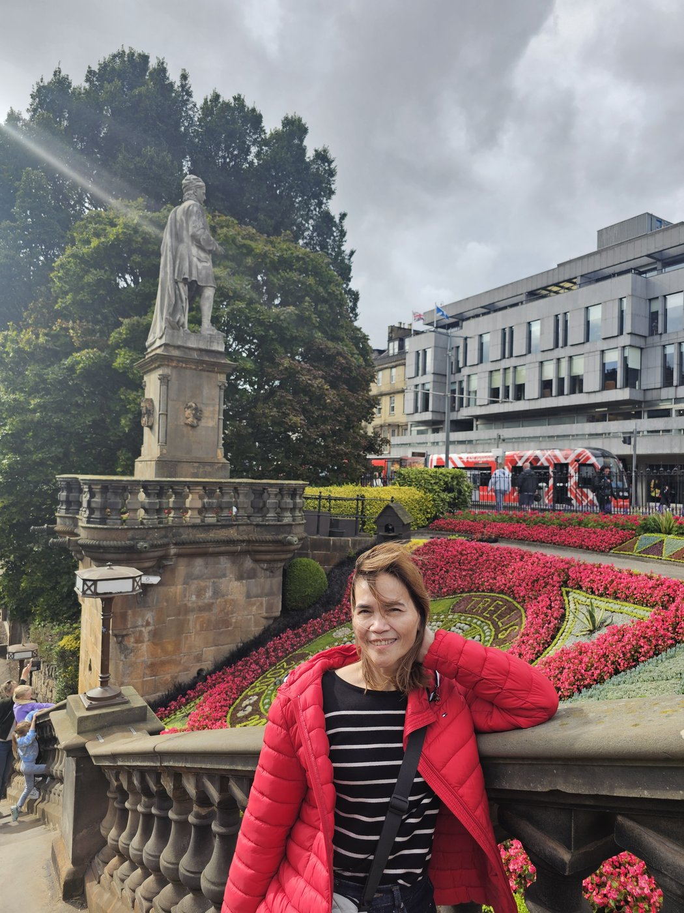
Ini jam bunga Edinburgh: sebuah jam mekanis sungguhan yang muka jamnya bukan pelat logam, melainkan petak tanah miring yang ditanami ribuan tanaman kecil. Jarumnya berputar di atas bunga. Dan yang bikin benda ini bukan sekadar dekorasi taman: yang pertama dipasang di sini tahun 1903, dan sejauh yang tercatat inilah jam bunga pertama di dunia.
Desainnya dibongkar dan ditanam ulang setiap tahun, dan tiap tahun temanya berbeda — biasanya untuk menghormati satu lembaga atau satu peringatan. Jadi apa yang tertanam di situ tahun ini adalah semacam pernyataan resmi kota, tapi ditulis dengan bunga, bukan dengan batu.
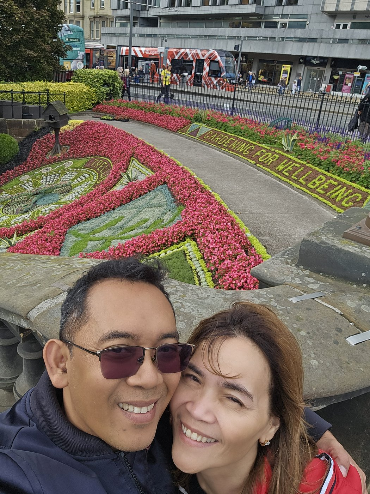
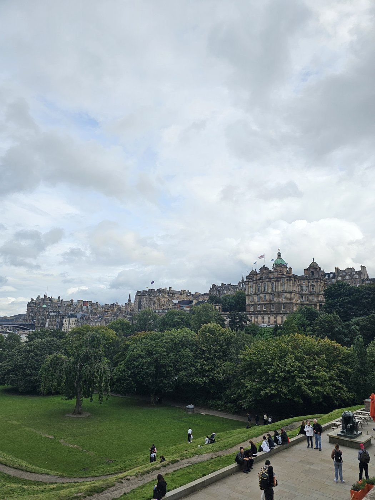
Kiri, jam 15.33: dibaca dari fotonya, tulisan yang ditanam di tepi jam berbunyi GARDENING FOR WELLBEING — berkebun untuk kesehatan jiwa. Kanan, jam 15.36: dan di seberang taman, Kota Tua berdiri di punggung bukitnya.
Di tengah petak jamnya ada lambang bundar dengan satu kata yang ikut ditanam dari daun: TRELLIS — nama lembaga yang tahun ini dihormati. Kerjanya tidak dijelaskan di petak itu, tapi motto yang ditanam bersamanya sudah cukup terang: berkebun, dipakai sebagai bagian dari merawat kesehatan. Ada juga rumah kayu kecil yang mencuat di sudut atas petaknya: itu bukan hiasan, itu rumah burung kukuk yang keluar pada waktu-waktu tertentu.
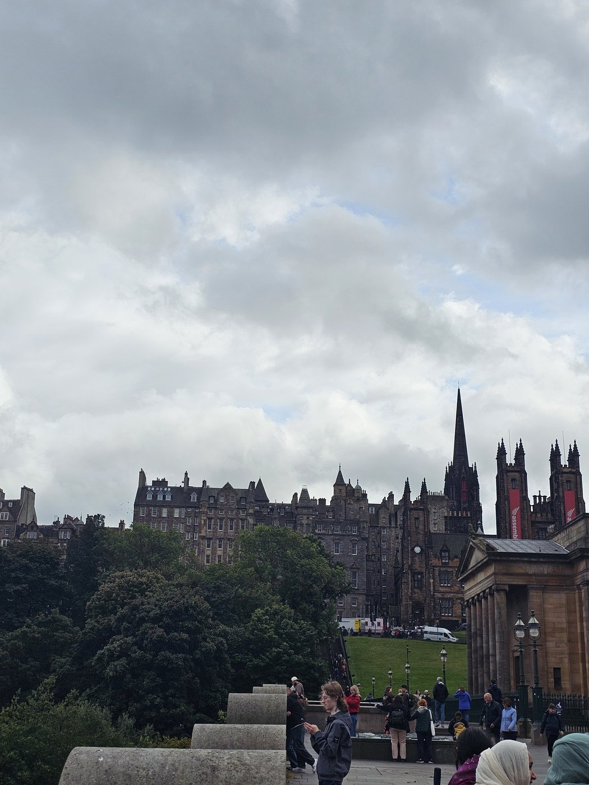
Dari dasar taman, punggung bukit itu kelihatan seperti kota kedua yang ditumpuk di atas kota pertama. Karena memang begitu: yang di atas adalah Kota Tua, yang di bawah dan di seberang adalah Kota Baru, dan taman tempat berdiri ini dulunya danau yang memisahkan keduanya.
Gerobak crepe, dan papan harganya
Semua angkanya tercetak besar-besar, jadi tidak perlu menebak
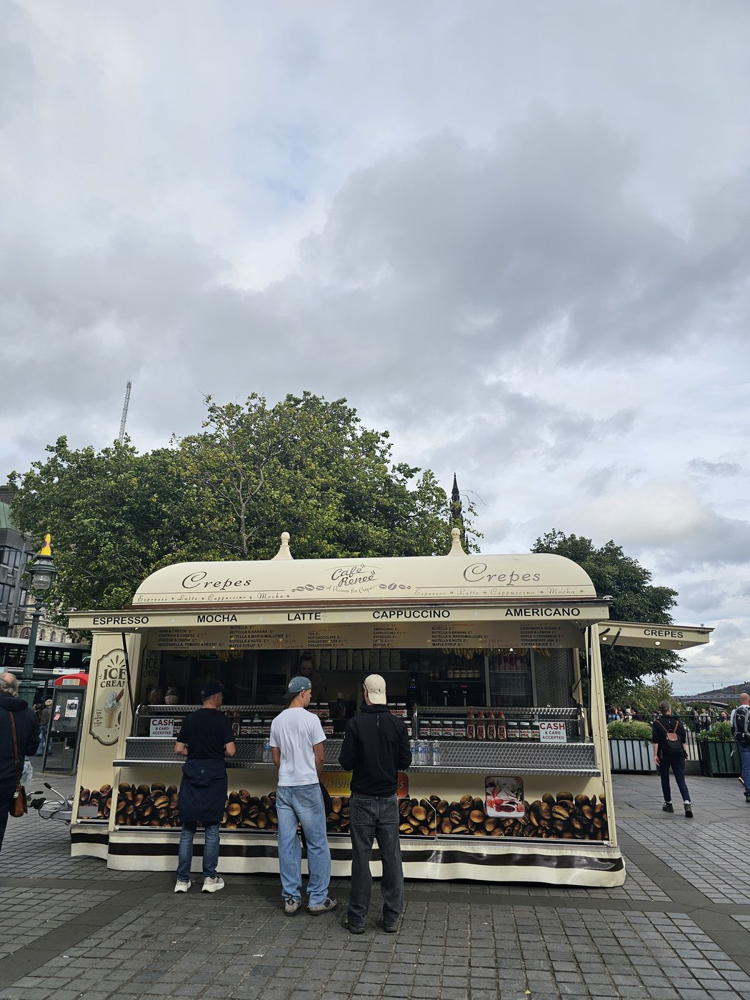
Gerobak seperti ini berdiri di jalur paling ramai di kota, di puncak musim festival. Dan karena papannya bisa dibaca sampai ke angka terakhir, sekalian saja dicatat — ini gambaran paling jujur soal berapa harga camilan jalanan di Edinburgh:
Bandingkan dengan satu jam lima menit duduk di kafe toko buku tadi siang: crepe gula-lemon di gerobak ini harganya kira-kira sama dengan secangkir minuman di dalam ruangan, dengan kursi, meja, dan jendela menghadap kastil. Di kota semahal ini, yang mahal bukan makanannya — yang mahal adalah berdiri di tempat yang ramai.
Galeri nasional yang gratis, dan pameran yang tidak
Dua hal berbeda yang sering dikira satu
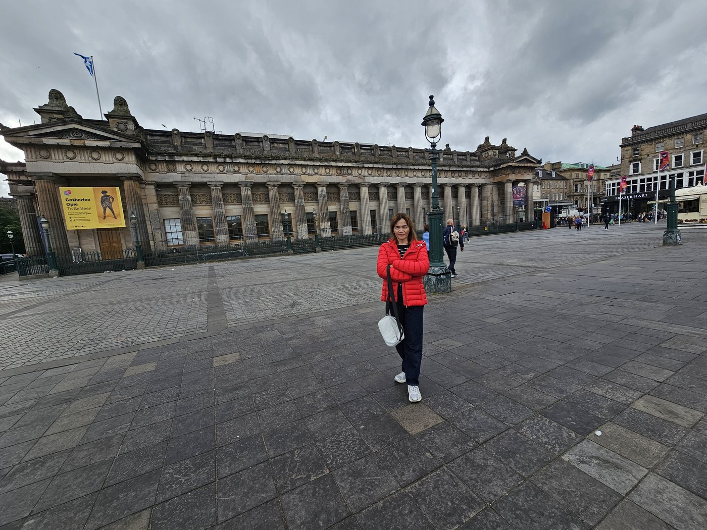
Dibaca dari spanduknya: “Catherine Opie — To Be Seen”, lalu satu baris kecil yang penting: “Friends and under 16s go free.” Artinya sederhana tapi sering keliru dipahami: koleksi tetap galeri nasional di sini memang gratis, tapi pameran khususnya berkarcis. Yang bebas biaya cuma anggota dan anak di bawah 16 tahun.
Ada satu baris lagi di spanduk yang sama, dengan lambang kursi roda dan tanda panah: “Accessible entrance at the back of this building.” Pintu masuk yang bisa diakses ada di belakang gedung. Gedung berpilar dari abad ke-19 memang hampir selalu berarti tangga di depan — dan menuliskan jalan lainnya di spanduk depan, bukan menyembunyikannya di situs web, adalah hal kecil yang jelas disengaja.
Dan beberapa langkah dari pintu itu, ada benda yang membuat urusan “bisa diakses” tadi jadi terasa bukan basa-basi.
Peta yang dibuat untuk diraba
Dipasang di tempat semua orang berhenti untuk memotret pemandangan
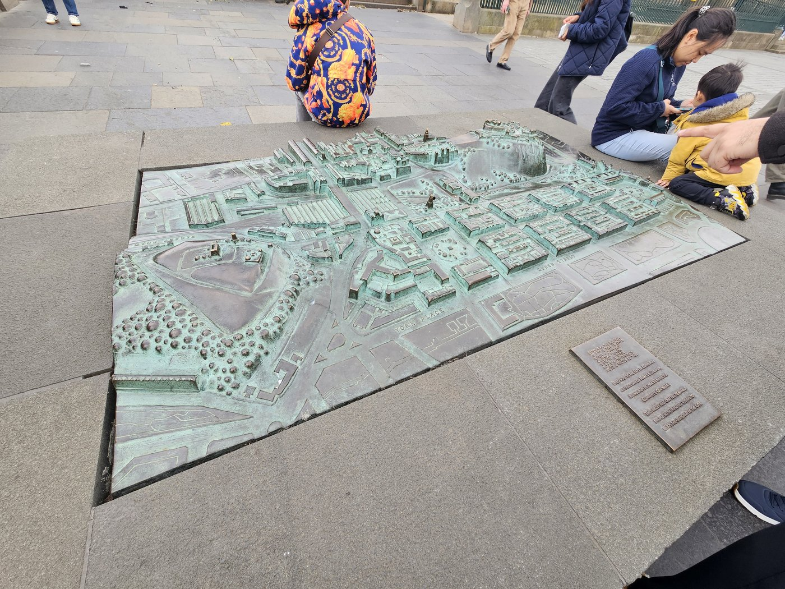
Di sebelahnya ada plakat kecil. Bagian atasnya bukan huruf, tapi deretan titik-titik timbul: Braille. Di bawahnya, huruf biasa, yang setelah dizoom terbaca utuh:
Dibaca pelan-pelan, kalimat itu berat sekali isinya. Pemandangan adalah hal paling visual yang bisa ditawarkan sebuah kota — itu justru satu-satunya hal yang tidak bisa dibagi kepada orang yang tidak melihat. Lalu pada 1984 sekelompok karyawan sebuah toko serba ada mengumpulkan uang untuk ulang tahun keseratus perusahaannya, dan yang mereka pilih bukan patung pendiri, bukan tugu, bukan papan nama.
Mereka membuat kotanya sendiri, dalam bentuk yang bisa diraba. Lalu memasangnya bukan di pojok museum, melainkan tepat di titik tempat semua orang berhenti untuk memotret.
Dan di foto itu kelihatan benda tersebut sedang dipakai sebagaimana mestinya: orang berdiri mengelilinginya, satu anak kecil berjongkok di tepinya sambil menunjuk-nunjuk. Empat puluh tahun lebih setelah dipasang, maketnya masih jadi tempat orang berkumpul — yang melihat maupun yang tidak.
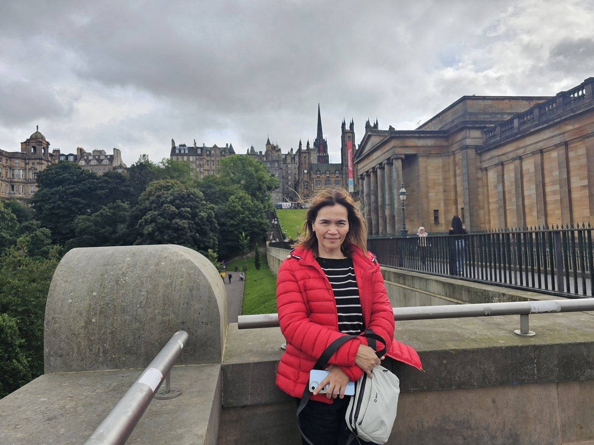
Lalu masuk ke dalam galerinya
Di mana satu kemenangan laut dan satu patung telanjang menempati dinding yang sama
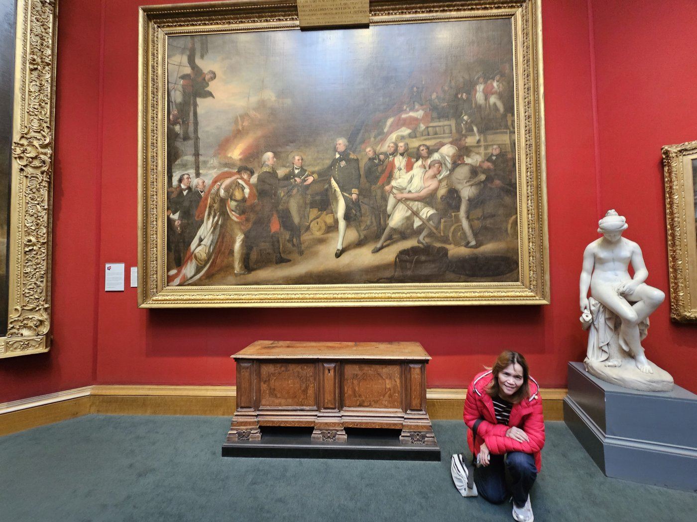
Pelat emas di atas bingkainya cuma sebagian yang terbaca, tapi dua nama muncul jelas: ADAM LORD VISCOUNT DUNCAN dan CAMPERDOWN. Camperdown adalah pertempuran laut tahun 1797 di lepas pantai Belanda, dan Duncan adalah laksamana Skotlandia yang memimpinnya. Jadi lukisan sebesar dinding ini, di ruang paling merah di galeri, isinya satu hari kerja di geladak kapal lebih dari dua abad lalu.
Dan tepat di sebelahnya, tanpa sekat, berdiri patung marmer putih seorang perempuan duduk. Begitulah selera abad ke-19 menyusun ruang: kemenangan militer dan tubuh telanjang digantung berdampingan, dan tidak ada yang merasa itu aneh.
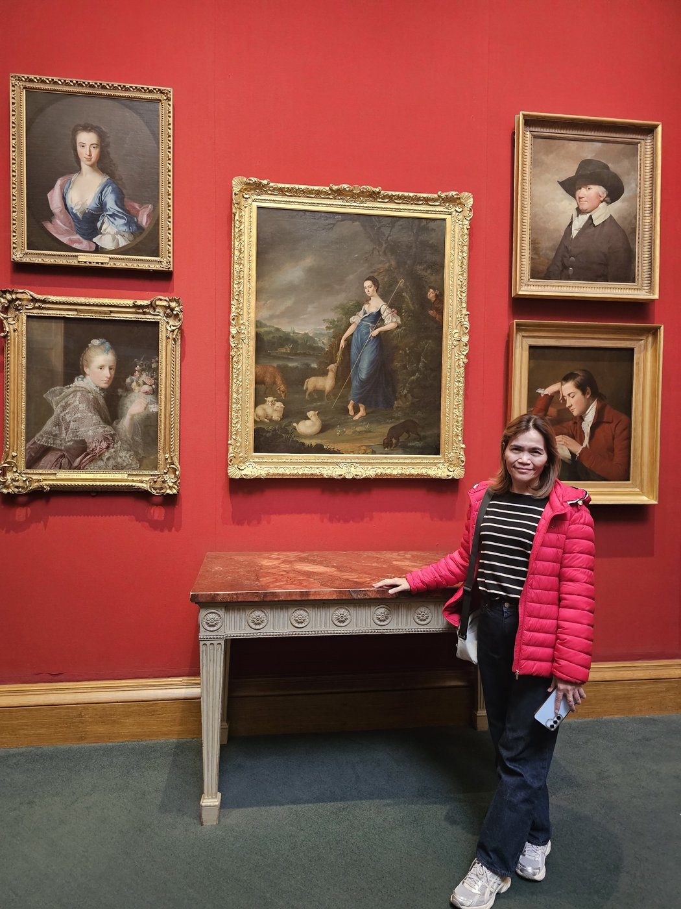
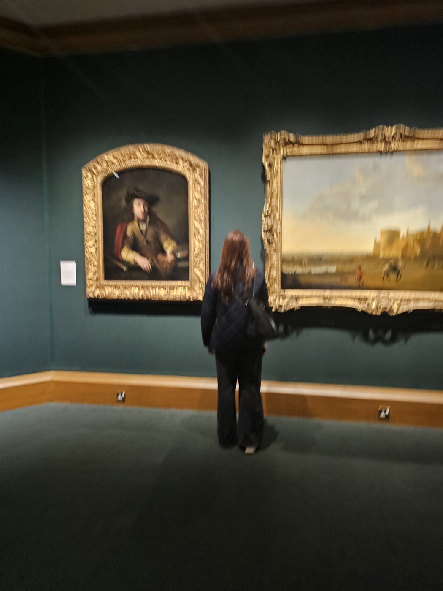
Jam 15.44 dan 15.45. Dinding merah untuk potret, dinding hijau untuk yang lain. Foto kanan sengaja tidak dibuang meski buram — itu memang tempo jalan kaki di galeri gratis: masuk, lihat, lanjut.
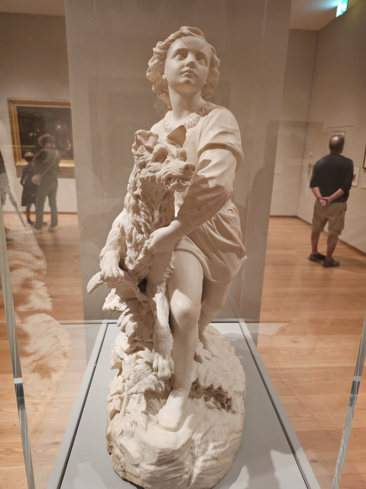
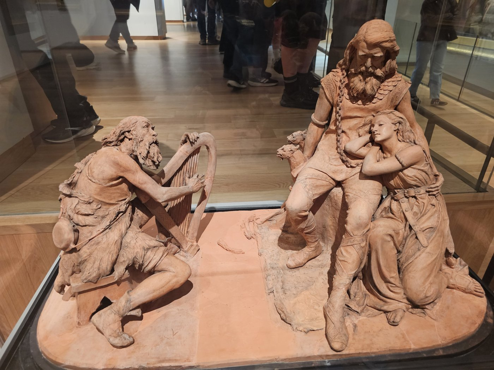
Jam 15.54, dua-duanya. Keterangan dindingnya tidak ikut terfoto, jadi judul dan pembuatnya tidak ditulis di sini. Tapi yang kanan menarik justru karena bahannya: itu tanah liat, bukan batu atau perunggu.
Patung terakota semacam itu biasanya bukan karya jadi, melainkan modelnya — versi kecil yang dibentuk dulu dari tanah liat sebelum sesuatu yang jauh lebih besar dipahat atau dicor. Menariknya, di kota yang sudah penuh sesak oleh patung selesai, yang dipajang di lemari kaca ini justru tahap coretannya.
Adegannya sendiri gampang dikenali sekalipun tanpa judul: seorang tua memetik harpa untuk seorang lelaki bersenjata yang sedang duduk, dengan seorang perempuan muda menyandarkan kepala di lututnya. Orang yang bercerita, dan orang yang mendengarkan. Di kota yang monumen terbesarnya dibangun untuk seorang tukang cerita, itu subjek yang sangat pada tempatnya.
Turun ke Market Street
Dan hari itu ditutup dengan berjalan pulang
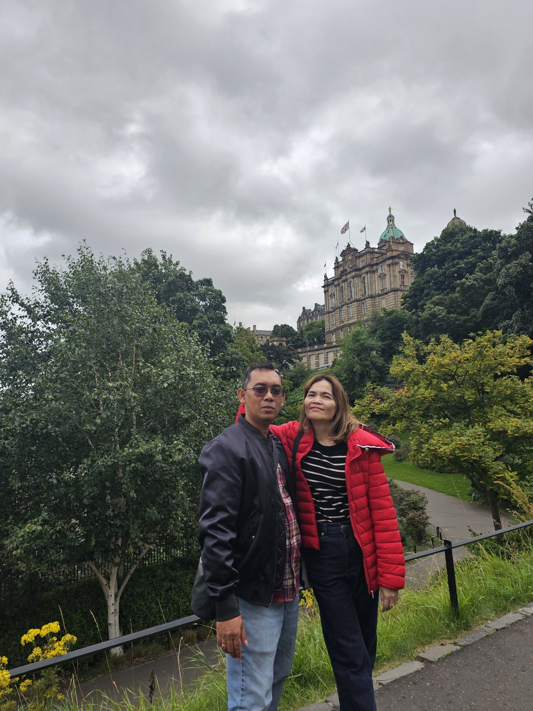
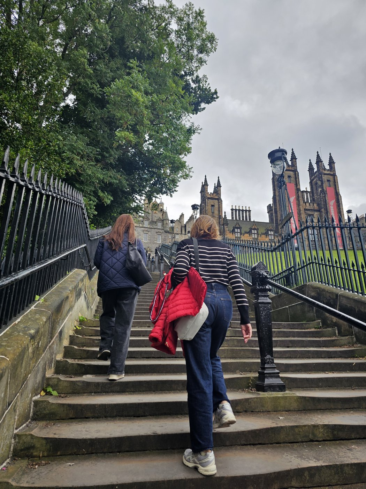
Jam 16.08 dan 16.10. Rombongannya sekarang tinggal segini. Dan tangga batu itu, seperti hampir semua hal di kota ini, menanjak.
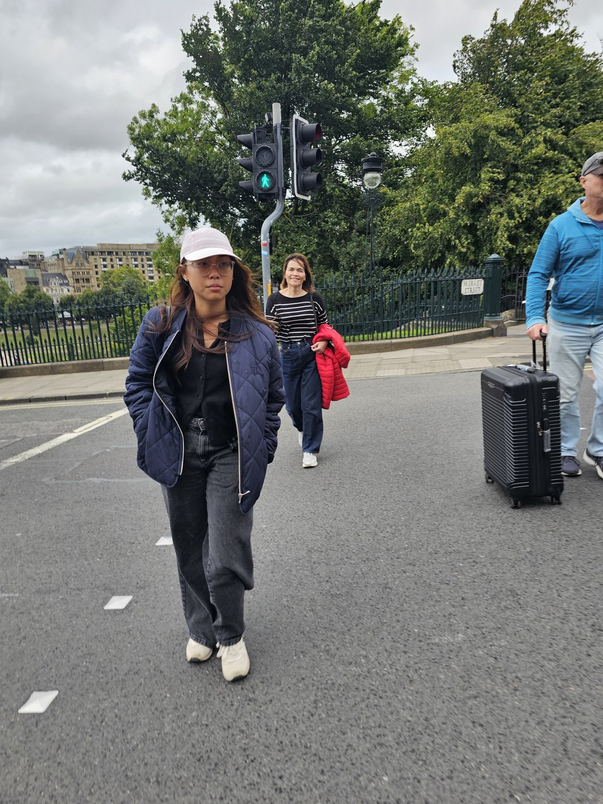
Dan di sebelah kanan foto itu ada seseorang menyeret koper besar — orang lain, bukan rombongan ini. Tapi kebetulannya lumayan: hari yang dimulai dengan menitipkan koper dan ditutup dengan mengantar satu koper pergi, diakhiri dengan berpapasan dengan koper orang lain yang perjalanannya baru saja mulai.
Jam 16.12, dan hari kelima belas selesai. Besok tinggal satu hari lagi.
Hal-hal kecil yang berguna di hari terakhir
- Lambaikan tangan kalau mau naik bus. Di Edinburgh — dan di banyak kota Inggris — bus tidak berhenti kalau tidak diberi isyarat, karena satu halte dilewati banyak trayek dan sopir tidak bisa menebak kamu menunggu yang mana. Sebaliknya, kalau mau turun, tekan tombol berhenti sebelum haltenya.
- Titipkan koper kalau jam terbangmu masih lama. Penitipan koper ada di dekat stasiun-stasiun besar, dipesan lewat aplikasi, dan tarifnya jauh lebih murah daripada menyewa kamar hotel setengah hari cuma untuk menaruh barang.
- Tapi pastikan yang memesan adalah yang akan datang. Penitipan di kawasan stasiun mengikat pesanan ke satu nama, dan orang itulah yang harus menyerahkan dan mengambil kopernya sambil menunjukkan identitas. Jangan pesan atas nama orang yang tidak ikut ke konternya.
- Ke bandara Edinburgh ada tiga pilihan, dan yang termurah belum tentu yang dipilih. Bus bandara £6,00 sekali jalan (£8,50 pulang-pergi terbuka), tiga puluh menit, berangkat sepanjang hari dan sepanjang malam. Trem punya jalurnya sendiri jadi tidak ikut macet, dan lantainya rata dari peron — itu yang bikin bedanya terasa kalau kamu bawa koper. Mobil aplikasi paling cepat dicoret kalau cuma satu orang. Semuanya cukup ditempel kartu atau ponsel, tanpa loket dan tanpa tiket kertas.
- Galeri dan museum nasional di sini umumnya gratis — tapi pameran khususnya tidak. Koleksi tetapnya bisa dilihat tanpa tiket, dan itu cara paling gampang mengisi setengah hari tanpa mengeluarkan apa-apa di kota semahal Edinburgh. Pameran bertiket biasanya diumumkan di spanduk depan gedungnya, lengkap dengan siapa saja yang bebas biaya. Baca sampai baris kecilnya sebelum ikut antre.
- Siapkan sekitar £7–£11 untuk satu crepe di gerobak jalanan. Angka-angka di halaman ini dibaca langsung dari papan menu sebuah gerobak di jalan utama pada musim festival: gula-lemon £7, Nutella £8, isi gurih £9–£11. Di kota ini yang mahal bukan makanannya, tapi lokasinya — jadi kalau mau hemat, menjauh sedikit dari jalur utama.
- Cari maket kota yang bisa diraba. Di titik pandang utama Edinburgh ada panel perunggu timbul seluruh pusat kota, lengkap dengan Braille, yang memang dibuat supaya orang dengan penglihatan terbatas ikut bisa “melihat” pemandangannya. Buat siapa pun, itu juga cara tercepat memahami bentuk kotanya sebelum mulai berjalan.
- Jangan beri makan camarnya. Camar di sini besar, berani, dan hafal betul bahwa orang duduk di bangku sambil memegang bungkusan berarti makanan. Sekali satu burung tahu tanganmu mengeluarkan sesuatu, yang datang tidak akan cuma satu.
- Kalau mau duduk lama dengan pemandangan bagus tanpa bayar mahal, cari kafe di lantai atas toko buku. Model toko buku berkafe sudah umum di Inggris, tidak ada yang mengusirmu kalau berlama-lama, dan beberapa di antaranya punya jendela yang di restoran biasa harganya beda sendiri.
- Jangan percaya langit pagi. Dua foto di halaman ini diambil berjarak setengah jam di tempat yang sama: yang satu kelabu, yang satu biru penuh. Bawa lapisan tipis, jangan bawa payung besar.